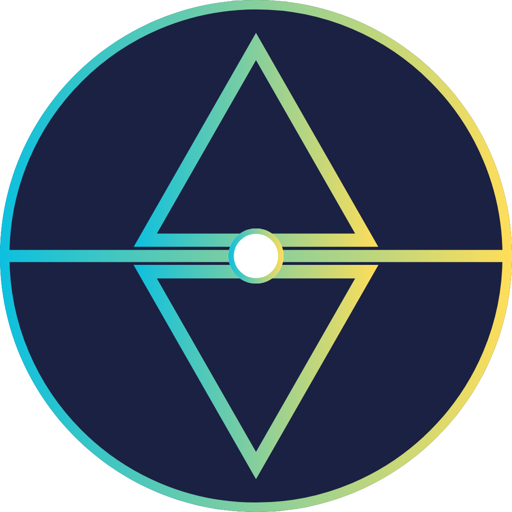
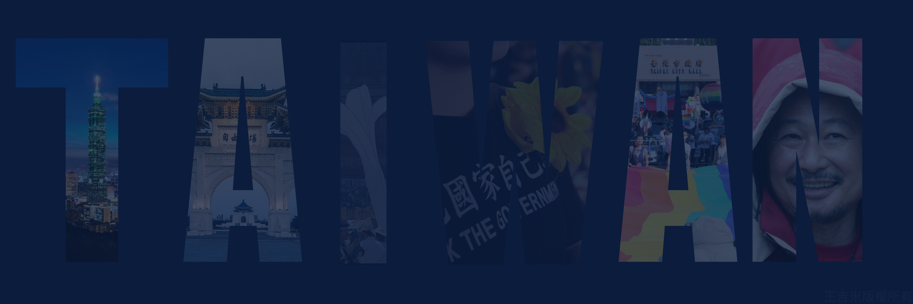

北回歸線 TNMNEWS
自由 民主 公平 公正 中立
媒體的本質是公共責任，幕後更是民主社會不可或缺的基石。
我們聚焦於青少年世代的聲音，因為我們堅信：青年力量，能驅動社會進步。
關於 TNM
北回歸線 TNMNEWS 是一個由青年主導的新聞媒體平台，致力於報導學生權益、教育政策、社會議題與文化觀察。我們相信新聞不只是資訊，更是公共參與的起點。TNM 以中立、公正為原則，傾聽每個世代的聲音，讓青年觀點成為社會討論的一部分。
